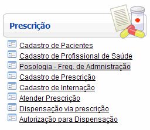

Posologia: Frequência de Administração [ Voltar ]Utilize este formulário para cadastrar no sistema frequências de administração que poderão ser associadas às prescrições e medicamentos. O formulário "Posologia: Frequência de Administração" encontra-se dentro do menu "Prescrição". 
Ao clicar no nome do formulário, o sistema exibirá a seguinte tela: Para criar uma nova frequência, siga os passos abaixo: 1º Passo: informe os dados da frequência. Os campos em amarelo são obrigatórios.
2°
Passo: clique no botão |
 para concluir o registro
de frequência
para concluir o registro
de frequência